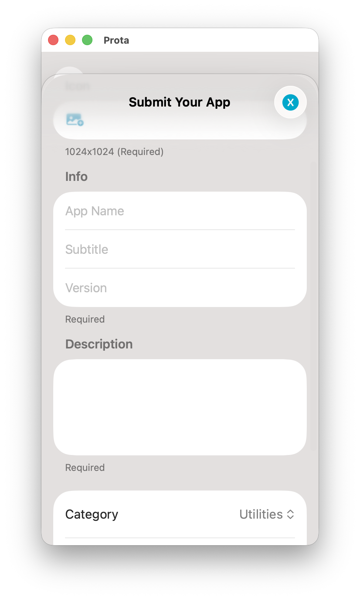
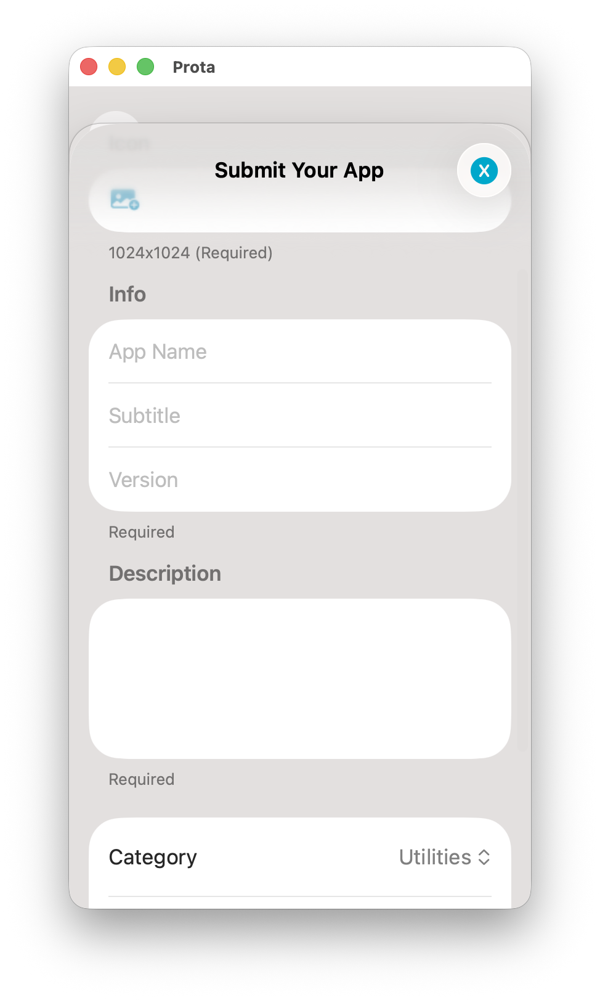

Now in Open Beta
Find the future
before it launches.
Discover unreleased gems, test cutting-edge features, and shape the apps of tomorrow. Prota connects ambitious developers with passionate beta testers.

 
